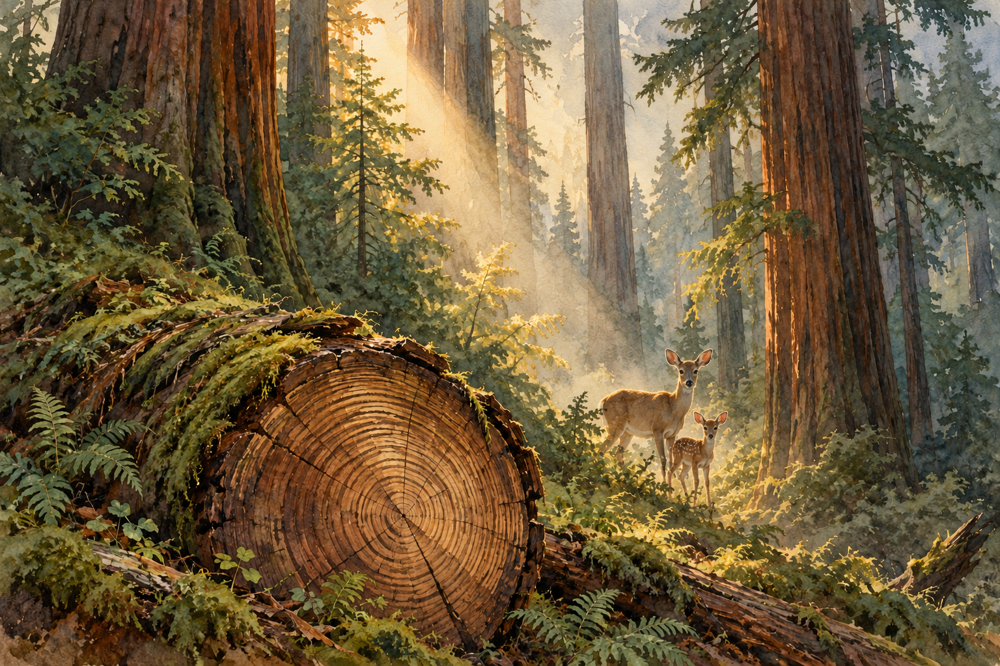

阿布 / 程序员与生活记录者ABU / PROGRAMMER & OBSERVER
做些工具。
也记录异乡生活。Make useful things.
Keep a record of life.
我是阿布，一个程序员。把日常的小麻烦做成工具，也把在北美的见闻留在声音和文字里。I’m Abu, a programmer. I make tools for everyday friction and keep a record of life in North America, in voice and in writing.

精选作品SELECTED WORK全部作品All work ↗
READ / CAPTURE / REVIEW
ReadShot
把读到的英文拍下来，读懂、收藏，再慢慢复习。Capture English worth keeping, understand it, save it and return to it.
最近留下的东西Recently added
大不了就出个BugWorst Case, a Bug
从德州到加州，把生活一点点重新跑通。From Texas toward California, rebuilding daily life together.
红杉树下Under the Redwoods
一段森林旅程，五次关于自然的观察。A forest walk, and five observations about nature.
走进山路，离开屏幕一会儿A little time on the trail
Big Bend、Grand Canyon 与 Yosemite 的徒步记录。Trail notes from Big Bend, Grand Canyon and Yosemite.